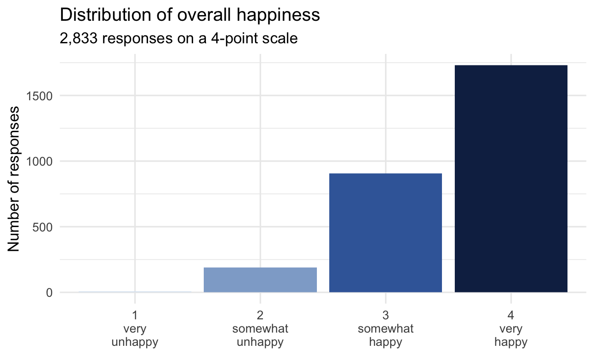
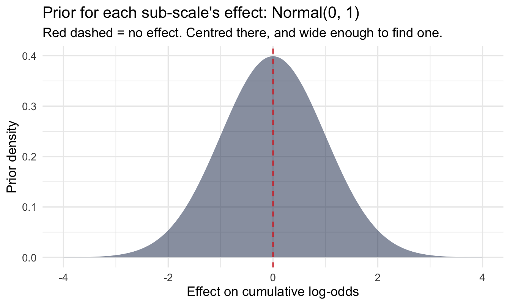
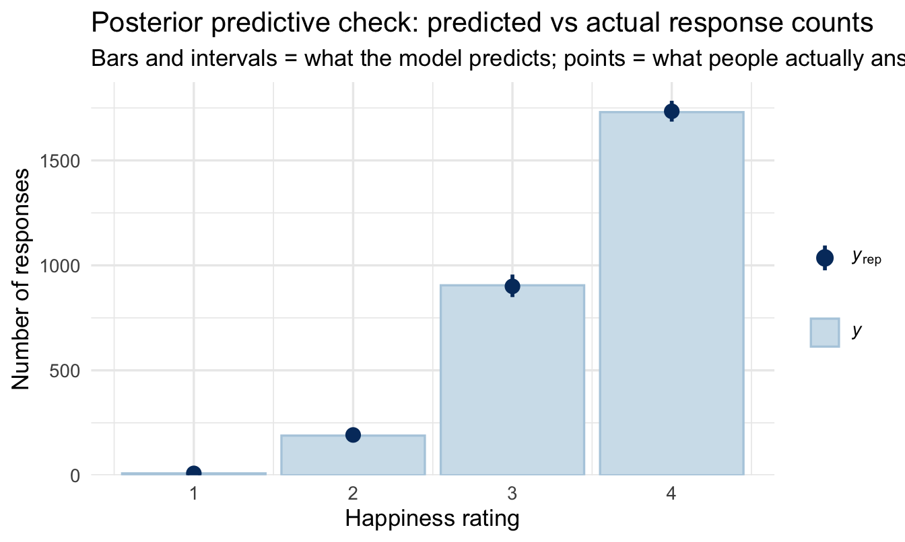
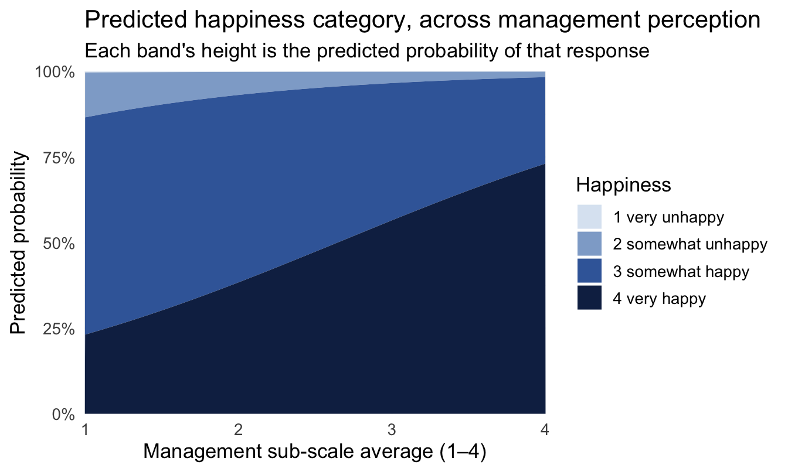

library(tidyverse)
library(peopleanalyticsdata)
library(brms)
library(tidybayes)
theme_set(theme_minimal(base_size = 13))
set.seed(2026)
# Shared colour tokens (matching theme/academicdesign*.scss). Navy and light
# navy carry the data; red is reserved for reference lines and annotations,
# never for a second data series.
navy <- "#122a52"
navy_light <- "#8fabd0"
red <- "#d32f2f"
# An *ordered* four-step ramp for the four Likert categories. Ordered data
# needs a palette that gets monotonically darker — a categorical palette
# (or a red somewhere in the middle) tells the eye the categories are
# unrelated, which is the exact opposite of what an ordinal scale means.
likert_pal <- c("#dce6f2", "#8fabd0", "#3d68a8", "#122a52")
data("employee_survey", package = "peopleanalyticsdata")
# Guard against missing values before modelling (Chapter 1 found gaps
# in a similar teaching dataset).
employee_survey <- employee_survey |>
drop_na(Happiness, Ben1, Ben2, Ben3, Work1, Work2, Work3,
Man1, Man2, Man3, Car1, Car2, Car3, Car4)18 Analysing Likert and Survey Data the Bayesian Way
Welcome
If you work in People Analytics, you work with Likert scales — 1–4, 1–5, 1–7, “strongly disagree” to “strongly agree.” They’re everywhere: engagement surveys, exit interviews, pulse checks, interview scorecards. And they’re routinely analysed in a way that quietly produces the wrong answer: treated as if they were ordinary continuous numbers, averaged, t-tested, put into a linear regression.
This chapter is about the gap between “1, 2, 3, 4 are numbers” and “1, 2, 3, 4 are ordered categories, not equally-spaced quantities” — and the Bayesian tool built specifically for the second, more accurate, description: ordinal regression.
The request, as it actually arrives
The engagement survey has closed and the CHRO wants the story, not the scores:
“Management came out at 3.1 and benefits at 3.4, so the deck says benefits are in better shape. Fine. But I have money for one programme next year. Which of these actually moves how people feel about working here?”
Two different questions are tangled up in that, and the usual analysis answers neither. Averaging the sub-scales and ranking them answers “which scores highest,” which is not the same as “which matters most.” And a linear regression on the averaged scores answers a version of “which matters most” in units — happiness points per management point — that can’t be turned back into anything she can say to a board.
What she can use is a probability: how much of the workforce moves from the unhappy categories into the happy ones. That’s an ordinal model’s native output, and this chapter’s closing chart is exactly that.
What you’ll be able to do by the end
- Explain why treating a Likert scale as continuous can mislead — and when it’s a harmless shortcut
- Recognise the proportional odds idea behind ordinal regression
- Fit a Bayesian ordinal model with
brms::cumulative() - Read and plot predicted category probabilities, not just a single coefficient
- Know where to go for the classical (frequentist) and deeper treatments of this topic
18.1 Setup
employee_survey has 2,833 responses to an engagement survey on a 4-point scale, increasingly positive: an overall Happiness rating, three benefits questions (Ben1-3), three work-environment questions (Work1-3), three management questions (Man1-3), and four career-prospects questions (Car1-4).
employee_survey <- employee_survey |>
mutate(
Man_avg = (Man1 + Man2 + Man3) / 3,
Work_avg = (Work1 + Work2 + Work3) / 3,
Ben_avg = (Ben1 + Ben2 + Ben3) / 3,
Car_avg = (Car1 + Car2 + Car3 + Car4) / 4,
Happiness = factor(Happiness, ordered = TRUE)
)
glimpse(employee_survey)Rows: 2,833
Columns: 18
$ Happiness <ord> 4, 3, 4, 4, 3, 4, 3, 4, 4, 4, 4, 4, 3, 4, 4, 4, 3, 4, 4, 4, …
$ Ben1 <int> 4, 3, 3, 3, 4, 4, 4, 4, 4, 4, 4, 4, 3, 3, 4, 3, 2, 4, 4, 3, …
$ Ben2 <int> 4, 3, 4, 4, 3, 4, 3, 3, 4, 4, 4, 4, 3, 4, 4, 4, 3, 4, 4, 3, …
$ Ben3 <int> 4, 3, 4, 3, 3, 4, 3, 3, 4, 4, 4, 4, 3, 4, 4, 4, 3, 4, 4, 3, …
$ Work1 <int> 4, 3, 2, 3, 2, 4, 2, 3, 3, 4, 4, 3, 3, 3, 3, 3, 2, 3, 3, 3, …
$ Work2 <int> 4, 3, 2, 3, 2, 4, 1, 2, 3, 4, 3, 3, 2, 2, 2, 2, 3, 2, 3, 3, …
$ Work3 <int> 3, 3, 2, 3, 1, 4, 1, 2, 2, 2, 3, 3, 2, 3, 2, 3, 3, 2, 3, 3, …
$ Man1 <int> 4, 4, 2, 3, 3, 4, 2, 3, 4, 4, 4, 4, 2, 4, 4, 3, 2, 3, 4, 4, …
$ Man2 <int> 4, 4, 3, 4, 3, 4, 2, 3, 3, 4, 3, 4, 3, 4, 4, 4, 3, 4, 4, 4, …
$ Man3 <int> 4, 4, 3, 4, 3, 4, 2, 3, 4, 4, 4, 4, 4, 4, 4, 4, 3, 4, 4, 4, …
$ Car1 <int> 4, 4, 3, 4, 2, 4, 4, 4, 4, 4, 4, 4, 4, 4, 4, 4, 3, 3, 4, 3, …
$ Car2 <int> 4, 3, 4, 4, 2, 4, 3, 4, 4, 4, 4, 4, 4, 3, 4, 4, 2, 4, 4, 4, …
$ Car3 <int> 4, 4, 2, 4, 2, 4, 3, 4, 4, 4, 4, 4, 3, 3, 4, 4, 2, 4, 4, 3, …
$ Car4 <int> 4, 4, 3, 4, 2, 4, 3, 4, 4, 4, 4, 4, 3, 3, 4, 3, 2, 3, 4, 3, …
$ Man_avg <dbl> 4.000000, 4.000000, 2.666667, 3.666667, 3.000000, 4.000000, …
$ Work_avg <dbl> 3.666667, 3.000000, 2.000000, 3.000000, 1.666667, 4.000000, …
$ Ben_avg <dbl> 4.000000, 3.000000, 3.666667, 3.333333, 3.333333, 4.000000, …
$ Car_avg <dbl> 4.00, 3.75, 3.00, 4.00, 2.00, 4.00, 3.25, 4.00, 4.00, 4.00, …We’ll average each sub-scale’s items into a single composite predictor to keep the model readable, and predict Happiness — kept as an ordered factor, which matters for everything that follows.
18.2 The problem: why “just average it” can mislead
18.2.1 A quick look at the shape
ggplot(employee_survey, aes(x = Happiness, fill = Happiness)) +
geom_bar(show.legend = FALSE) +
1 scale_fill_manual(values = likert_pal) +
scale_x_discrete(labels = c("1\nvery\nunhappy", "2\nsomewhat\nunhappy",
"3\nsomewhat\nhappy", "4\nvery\nhappy")) +
labs(title = "Distribution of overall happiness",
subtitle = "2,833 responses on a 4-point scale",
x = NULL, y = "Number of responses")- 1
- The same ordered ramp used for every Likert chart in this chapter, so “darker means more positive” means the same thing on every one of them.

Note the shape, because it decides how much of this chapter you need. The responses are bunched toward the positive end and there are only four categories — which, as the note below spells out, is exactly the combination where treating the scale as continuous stops being a harmless shortcut.
18.2.2 What “treat it as continuous” assumes
A plain linear regression of Happiness (as a number) on Man_avg assumes the gap between 1 and 2 means the same thing, in the same units, as the gap between 3 and 4. There’s no reason to believe that: the psychological distance between “strongly disagree” and “disagree” is not guaranteed to equal the distance between “agree” and “strongly agree.”
naive_lm <- lm(as.numeric(Happiness) ~ Man_avg, data = employee_survey)
summary(naive_lm)$coefficients Estimate Std. Error t value Pr(>|t|)
(Intercept) 1.959011 0.06553858 29.89096 7.322643e-171
Man_avg 0.465539 0.01906285 24.42126 1.080195e-119Two numbers to read off that, in the Estimate column. The (Intercept) is the predicted happiness score for someone rating their management a hypothetical zero — already outside the scale, which is the first hint. Man_avg is the slope: how many happiness points a one-point improvement in management perception buys, and the model insists it’s the same number wherever on the scale you start.
That second assumption is the one to test, and the way to test it is to ask the model what it predicts at the ends:
tibble(Man_avg = c(1, 4)) |>
mutate(predicted = predict(naive_lm, newdata = tibble(Man_avg = Man_avg)))# A tibble: 2 × 2
Man_avg predicted
<dbl> <dbl>
1 1 2.42
2 4 3.82
Important
Watch what a linear model is willing to predict at the edges of the scale: values that don’t correspond to any real response category, and a straight-line relationship that treats every one-point move as identical regardless of where on the scale it happens. With only four categories and responses piled up near the top (common in engagement data), this isn’t a small rounding issue — it changes the conclusion.
The deeper problem is that “3.6” is not an answer anybody gave. There is no response category between “somewhat happy” and “very happy”, so a predicted 3.6 cannot be translated into a statement about people. The ordinal model’s output — a probability for each actual category — can.
NoteTo be fair to the shortcut
Treating a Likert item as continuous isn’t always wrong in practice — with enough categories (5–7+), a roughly symmetric distribution, and a large sample, results from a linear model and an ordinal model often point the same direction. The risk rises exactly where engagement data usually sits: few categories, heavily skewed toward the positive end, and the deltas between adjacent categories are unlikely to be equal. Check your own data’s shape before assuming either way.
18.3 The idea behind ordinal regression
TipFor the ML/DS crowd
If you’ve trained a model on ordinal survey targets before, there’s a good chance you did one of two things that quietly lose information: treated it as a regression target (implicitly assuming equal spacing, as above) or as multiclass classification with a categorical cross-entropy loss (which treats predicting “2” instead of the true “4” as no worse than predicting “3” instead of “4” — throwing away the fact that categories are ordered). Ordinal regression is the dedicated middle ground, and it shows up under different names across tooling: “ordered logit”/“ordered probit” in econometrics, cumulative link models in statistics, and libraries like Python’s mord in more ML-flavoured toolchains. Same underlying idea as this chapter’s model, whichever name you meet it under.
18.3.1 A latent variable underneath
Ordinal regression imagines a continuous, unobserved “true happiness” for every respondent, which gets chopped into the four categories we observe by three thresholds:
very unhappy | threshold 1 | somewhat unhappy | threshold 2 | somewhat happy | threshold 3 | very happyThe model estimates where those thresholds sit, and how predictors shift the whole underlying distribution left or right. This is exactly the same latent-threshold idea Keith McNulty’s book develops in depth in Chapter 7, “Proportional Odds Logistic Regression for Ordered Category Outcomes” — if you want the classical derivation and more worked examples of this model, that’s the place to go deeper. This chapter gives you the Bayesian fitting and interpretation of the same model family — and, true to form throughout this book, fitting it is still brm() with a formula and priors, just family = cumulative("logit") in place of whatever came before.
18.3.2 Fitting it
The same weakly-informative shape used for the log-odds slopes back in Chapter 9 — worth a quick look again, since it’s a new model family even if the prior itself isn’t new:
tibble(b = seq(-4, 4, length.out = 400)) |>
mutate(density = dnorm(b, 0, 1)) |>
ggplot(aes(b, density)) +
geom_area(fill = navy, alpha = 0.5) +
geom_vline(xintercept = 0, colour = red, linetype = "dashed") +
labs(title = "Prior for each sub-scale's effect: Normal(0, 1)",
subtitle = "Red dashed = no effect. Centred there, and wide enough to find one.",
x = "Effect on cumulative log-odds", y = "Prior density")
NoteWhy there’s no separate prior predictive check here
Chapter 10’s step 4 asks for a prior predictive check as well as a prior plot, and this chapter does the plot and not the simulation. That’s a deliberate choice rather than an omission, and the reason is worth knowing.
An ordinal model’s outcome is bounded by construction. Whatever the priors, the model can only ever predict a probability distribution across the four categories that exist — it cannot produce a negative salary (Chapter 16) or an engagement score of 140 (Chapter 22), because there is nothing for it to predict except “1, 2, 3 or 4”. The absurd-implications failure mode that a prior predictive check exists to catch is largely unavailable to it.
What remains checkable is whether the implied distribution across categories is sensible before seeing data, and the honest version of that check is the posterior predictive type = "bars" chart two sections down. The general rule: prior predictive checks earn their keep in proportion to how far the outcome scale extends beyond the plausible. On a four-category scale, that’s not very far.
fit_ord <- brm(
Happiness ~ Man_avg + Work_avg + Ben_avg + Car_avg,
data = employee_survey, family = cumulative("logit"),
prior = c(prior(normal(0, 1), class = b)),
chains = 4, iter = 2000, seed = 16, refresh = 0
)
summary(fit_ord) Family: cumulative
Links: mu = logit
Formula: Happiness ~ Man_avg + Work_avg + Ben_avg + Car_avg
Data: employee_survey (Number of observations: 2833)
Draws: 4 chains, each with iter = 2000; warmup = 1000; thin = 1;
total post-warmup draws = 4000
Regression Coefficients:
Estimate Est.Error l-95% CI u-95% CI Rhat Bulk_ESS Tail_ESS
Intercept[1] 5.86 0.50 4.86 6.82 1.00 3409 2980
Intercept[2] 9.91 0.43 9.10 10.75 1.00 3888 3111
Intercept[3] 13.00 0.47 12.11 13.95 1.00 3379 2846
Man_avg 0.74 0.08 0.57 0.91 1.00 3532 2593
Work_avg 1.03 0.07 0.89 1.18 1.00 3552 2835
Ben_avg 1.13 0.10 0.92 1.33 1.00 3328 2636
Car_avg 1.15 0.10 0.94 1.35 1.00 3212 2612
Further Distributional Parameters:
Estimate Est.Error l-95% CI u-95% CI Rhat Bulk_ESS Tail_ESS
disc 1.00 0.00 1.00 1.00 NA NA NA
Draws were sampled using sampling(NUTS). For each parameter, Bulk_ESS
and Tail_ESS are effective sample size measures, and Rhat is the potential
scale reduction factor on split chains (at convergence, Rhat = 1).18.3.3 Reading the output, line by line
This output looks like every other brms summary and one block means something quite different from usual. That block is worth slowing down on, because it’s where the thresholds we just drew as a diagram actually live:
Regression Coefficients — but read the Intercepts separately. There are two kinds of row here, mixed together:
Intercept[1],Intercept[2],Intercept[3]are the thresholds — the three cut-points from the diagram above, on the cumulative log-odds scale. Three of them for four categories, always one fewer than the number of categories. They should come out in increasing order (Intercept[1]<Intercept[2]<Intercept[3]), because they’re positions along a line;brmsenforces this, so if they ever look out of order you’ve misread which rows you’re looking at. They are not “the intercept” in the Chapter 6 sense, and there’s rarely much reason to interpret their values directly.Man_avg,Work_avg,Ben_avg,Car_avgare the actual predictor effects — how far each one shifts the whole latent distribution relative to those fixed thresholds. Positive means shifting people toward the happier end.
No sigma. Worth noticing its absence. A Normal model needs a residual standard deviation; here the latent scale’s spread is fixed at 1 by convention, because the thresholds and the coefficients are only ever identified relative to it. Nothing has gone wrong.
Rhat and Bulk_ESS. Chapter 10’s step 6, as always. Ordinal models with several correlated predictors — and these four sub-scales are correlated, since happy people tend to rate everything highly — can sample less crisply than the models so far. This is a reasonable place to actually look rather than assume.
Tip
The thing to take from that block: the thresholds are not the finding and the coefficients are not the deliverable either. The coefficients are on a cumulative log-odds scale that nobody can interpret out loud. Two sections below turns them into predicted category probabilities, which is the form a stakeholder can use.
Note“Proportional odds” — the assumption in the name
The model assumes each predictor’s effect is the same across every threshold — moving from “very unhappy” to “somewhat unhappy” and moving from “somewhat happy” to “very happy” are shifted by the same amount for a one-point change in, say, Man_avg. This is a real assumption, not a technicality — it’s checkable (compare to a model that relaxes it) and worth stating explicitly when you report results.
18.3.4 Reading the coefficients
fixef(fit_ord) |>
as_tibble(rownames = "term") |>
filter(!str_detect(term, "Intercept"))# A tibble: 4 × 5
term Estimate Est.Error Q2.5 Q97.5
<chr> <dbl> <dbl> <dbl> <dbl>
1 Man_avg 0.737 0.0846 0.574 0.905
2 Work_avg 1.03 0.0740 0.886 1.18
3 Ben_avg 1.13 0.104 0.921 1.33
4 Car_avg 1.15 0.103 0.940 1.35 These are log-odds on the cumulative scale — not intuitive to read directly. Before turning them into something usable, the posterior predictive check Chapter 10 asks for. For a categorical outcome there’s a purpose-built version: compare the predicted count in each response category against the observed count.
pp_check(fit_ord, type = "bars", ndraws = 200) +
labs(title = "Posterior predictive check: predicted vs actual response counts",
subtitle = "Bars and intervals = what the model predicts; points = what people actually answered",
x = "Happiness rating", y = "Number of responses")
NoteWhat this catches that a coefficient can’t
One bar per response category, and you want each observed point sitting inside its interval. Read it as four separate questions: does the model reproduce how many people said “very unhappy”? “Somewhat unhappy”? And so on.
The specific failure to look for in engagement data is the top category. If the model under-predicts the number of 4s — the point sitting above its bar — that’s a sign the proportional-odds assumption is straining at the positive end, where all the responses are piled up. That matters because the top category is usually the one being reported to the business (“X% of staff are very happy”), so misfit there lands directly in the headline number.
This check is also the reason to prefer the ordinal model over the linear one on evidence rather than principle. A linear model can’t be checked this way at all — it doesn’t predict categories, so there’s nothing to compare.
The far more useful output is the predicted probability of each response category:
newdata <- tibble(
Man_avg = seq(1, 4, length.out = 30),
Work_avg = mean(employee_survey$Work_avg),
Ben_avg = mean(employee_survey$Ben_avg),
Car_avg = mean(employee_survey$Car_avg)
)
pred_probs <- newdata |>
add_epred_draws(fit_ord) |>
group_by(Man_avg, .category) |>
summarise(mean_prob = mean(.epred), .groups = "drop")
ggplot(pred_probs, aes(x = Man_avg, y = mean_prob, fill = .category)) +
geom_area(position = "stack") +
scale_fill_manual(
1 values = likert_pal,
labels = c("1 very unhappy", "2 somewhat unhappy",
"3 somewhat happy", "4 very happy")
) +
scale_y_continuous(labels = scales::percent, expand = c(0, 0)) +
scale_x_continuous(expand = c(0, 0)) +
labs(
title = "Predicted happiness category, across management perception",
subtitle = "Each band's height is the predicted probability of that response",
x = "Management sub-scale average (1–4)", y = "Predicted probability",
fill = "Happiness"
)- 1
- The ordered ramp again, and this is the chart where it matters most. An earlier draft of this figure used red for category 3 — which reads as a highlight in the middle of an ordered sequence, telling the eye that “somewhat happy” is a different kind of thing from its neighbours. On an ordinal scale, colour has to be monotonic or it contradicts the model it’s illustrating.

Code
# The headline number, computed rather than typed, so the sentence below
# always matches the fitted model.
very_happy <- pred_probs |>
filter(.category == "4") |>
filter(Man_avg == min(Man_avg) | Man_avg == max(Man_avg)) |>
arrange(Man_avg)
shift_low <- very_happy$mean_prob[1]
shift_high <- very_happy$mean_prob[2]
ImportantBusiness translation
This chart says something a single coefficient can’t: as management perception improves, the whole distribution of happiness responses shifts — the “very unhappy” and “somewhat unhappy” bands shrink, and “very happy” grows. That’s a much more useful (and honest) statement than “the coefficient was significant.”
The sentence to put next to it, in Chapter 10’s one-chart-one-sentence form:
Among people who rate their management at the bottom of the scale, about 23% are predicted to say they’re very happy. At the top of the management scale that rises to about 73% — holding benefits, work environment and career perceptions at their average.
Both numbers are proportions of people in categories that people actually chose. Nobody has to be told what a cumulative log-odds is, and nothing has been rounded into a 3.6 that means nothing.
NoteA different lens: the classical version, and where it strains
The frequentist proportional-odds model (MASS::polr() or ordinal::clm() in R) fits the same model and will usually give you very similar point estimates to the Bayesian version above — this isn’t an area where the two philosophies typically disagree much on the answer. Where the Bayesian version earns its keep: a full posterior for every predicted probability (not just a point estimate with a Wald-style standard error), and a natural extension to add a multilevel structure (e.g. responses nested within department or team, exactly as in Chapters 8 and 15) without leaving the same modelling framework.
18.4 Aside: multiple raters on the same Likert scale
recruiting — another peopleanalyticsdata dataset, on hiring decisions — has three interviewers each rating candidates 1–5 (int1, int2 from line managers, int3 from HR). The same ordinal framework applies to asking whether raters use the scale consistently:
data("recruiting", package = "peopleanalyticsdata")
recruiting <- recruiting |> drop_na(int1, int2, int3)
recruiting |>
summarise(
mean_int1 = mean(int1), mean_int2 = mean(int2), mean_int3 = mean(int3),
cor_12 = cor(int1, int2), cor_13 = cor(int1, int3)
) mean_int1 mean_int2 mean_int3 cor_12 cor_13
1 3.257764 3.507246 3.412008 0.155829 0.107707
CautionTry it yourself
Fit int3 ~ int1 + int2 with family = cumulative("logit"). Does the HR interviewer’s rating track the line managers’ ratings closely, or does it look like a different scale is being applied? This is a lightweight, model-based way to ask an inter-rater reliability question you’d otherwise reach for Cohen’s kappa or an ICC to answer.
On the job
ImportantWhy this matters day to day
Every engagement survey, exit interview scorecard, interview rating, and pulse check in your organisation is ordinal data. The habit of averaging Likert items and running a t-test or linear regression is extremely common and usually harmless when categories are numerous and responses spread out — and genuinely misleading exactly when survey data tends to look in practice: few categories, bunched toward the positive end. Checking your data’s shape before choosing, rather than defaulting to the familiar tool, is the actual skill here.
Summary
NoteToday you learned
- Likert scales are ordered categories, not guaranteed to be equally spaced — treating them as continuous is a real assumption, not a neutral default.
- Ordinal regression models a latent continuous scale cut by thresholds into the categories you observe.
- The proportional odds assumption says a predictor’s effect is the same across every threshold — checkable, and worth stating.
brms::cumulative("logit")fits this model with full posteriors; plotting predicted category probabilities communicates far more than a single coefficient.- The frequentist version (
polr()/clm()) usually agrees closely on the answer — the Bayesian version’s edge is full uncertainty and an easy path to adding multilevel structure. pp_check(type = "bars")is the check that matters here: it asks whether the model reproduces how many people actually chose each category, and misfit in the top category is the failure that lands in your headline number.- Colour on an ordinal chart has to be monotonic. A sequential ramp says “these categories are ordered”; a categorical palette, or a highlight colour in the middle of the sequence, contradicts the model you just fitted.
Next chapter
Modelling what you can’t see — this chapter took the survey responses at face value. The next one asks what happens when the number in the column is not quite the quantity it claims to be, or is not there at all.